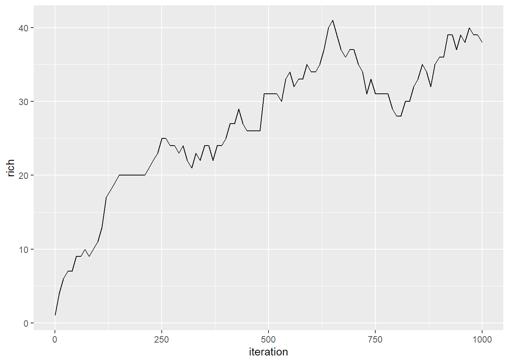

roleR Use Cases
Jacob Idec
2022-10-16
roleR_use_cases.RmdThis document shows off various use cases using the current implementation of roleR
Overview
p <- roleParams(individuals_local = 100, individuals_meta = 1000,
species_meta = 50, speciation_local = 0.05,
speciation_meta = 0.05, extinction_meta = 0.05, env_sigma = 0.5,
trait_sigma=1,comp_sigma = 0.5, dispersal_prob = 0.1, mutation_rate = 0.01,
equilib_escape = 1, num_basepairs = 250,
init_type = 'oceanic_island', niter = 1000, niterTimestep = 100)
model <- runRoLE(roleModel(p))
stats <- getSumStats(model,funs=list(rich=richness)) #TODO add default where all existing sumstats are added
ggplot(stats, aes(iteration, rich)) +
geom_line()
Parameter Creation
Create a set of parameters specifying every one
p <- roleParams(individuals_local = 100, individuals_meta = 1000,
species_meta = 50, speciation_local = 0.05,
speciation_meta = 0.05, extinction_meta = 0.05, env_sigma = 0.5,
trait_sigma=1,comp_sigma = 0.5, dispersal_prob = 0.1, mutation_rate = 0.01,
equilib_escape = 1, num_basepairs = 250,
init_type = 'oceanic_island', niter = 1000, niterTimestep = 100)Create a set of params per the Unified Neutral Theory of Biodiversity (UNTB). This creates a “UNTB-flavored” RoLE model
p_untb <- untbParams(individuals_local = 100, individuals_meta = 1000,
species_meta = 50,
speciation = 0.2,
dispersal_prob = 0.1, init_type = 'oceanic_island',
niter = 30000, niterTimestep = 1000) See the roleParams documentation for descriptions of all available parameters
Group Question: Should default parameters exist so that simply p <- roleParams() creates a valid params? If so what should the defaults be?
Model & Experiment Creation & Running
Create a model (not yet run) using the params, then run it
Create an experiment (not yet run) containing two models created using both sets of params, then run it. Experiment running can be parallelized on Windows, Mac, & Linux by specifying the number of cores to use. When you run an experiment, it runs every model within it.
exp <- roleExperiment(list(p,p_untb))
#library(parallel)
#exp <- runRoLE(exp,cores=2)Experiments are intended to encapsulate one or more hypotheses through comparison of multiple varying models contained within them
Group Question: Is encapsulating multiple models as experiments useful, or would you rather deal with models individually in your use cases?
Extracting Data From Models
Get a summary stats over time for a single model, each row being a different saved iteration state. Available raw stats are rawAbundance, rawSpAbundance, rawTraits, rawGenDiv, rawBranchLengths, and rawApePhylo. Available transformed stats are hillAbund, hillGenetic, hillTrait, hillPhylo, and richness.
stats <- getSumStats(model, list(rich = richness,hill_abund=hillAbund))
stats## rich hill_abund_1 hill_abund_2 hill_abund_3 hill_abund_4 iteration
## 1 1 1.000000 1.000000 1.000000 1.000000 0
## 2 15 2.878159 1.628664 1.451319 1.392741 100
## 3 20 4.513310 2.124947 1.782460 1.672288 200
## 4 13 3.411287 1.893222 1.635853 1.549570 300
## 5 20 6.211256 2.927400 2.318071 2.115546 400
## 6 24 8.899449 4.108463 3.081785 2.734310 500
## 7 21 7.943058 3.903201 2.980974 2.657831 600
## 8 19 6.998104 3.706449 2.887642 2.585832 700
## 9 19 7.889036 3.937008 2.988072 2.659203 800
## 10 22 10.972850 5.611672 4.056069 3.504531 900
## 11 20 10.883219 6.337136 4.693853 4.035401 1000